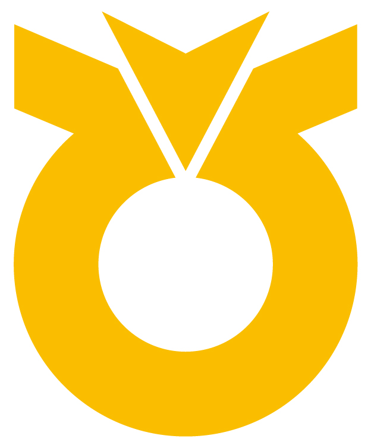

NH농협은행 · 사내 협업 시스템 시안지금은 기획서에 글로 적고, 회의에서 말로 설명하고, 개발이 다르게 이해한 채로 만들어집니다. 위드캔버스는 그 사이에 화면 한 장을 놓습니다. 기획자가 화면을 만들고, 개발·현업이 그 화면 위 어색한 곳을 손가락으로 짚듯 눌러 한 줄 남기고, 기획자가 하나씩 반영을 결정합니다. 결정한 것과 하지 않은 것이 이유와 함께 남습니다.
화면을 만들고, 모인 의견을 반영·보류·반려로 결정합니다. 판을 만드는 권한이 이 사람에게만 있습니다.
구현할 수 있는지, 빠진 상태가 없는지 짚습니다. 결정 버튼이 보이지 않습니다.
담당자가 스스로 판단하지 않고 넘긴 지적만 봅니다. 화면을 고치지 않고 판단만 남깁니다.
메뉴가 없습니다. 지금 할 일 한 줄과 목록 하나뿐입니다.
기획 2새 프로젝트 만들기이름·무엇을·누가 함께·언제까지, 네 가지만 정하면 열립니다.
기획 3참고자료 올리기기획서·화면정의서·API 명세를 올립니다. 어느 자료를 AI가 읽을지 스위치로 정합니다.
기획 4검토자 초대·알림사람마다 물어볼 것이 다릅니다. 알림 문구에 그 말이 그대로 들어갑니다.
기획 5세 가지만 물어보기빈 프롬프트 칸을 주지 않습니다. 무엇을·누가 보게·어떤 느낌, 고르기만 하면 됩니다.
기획 6협업 캔버스모드는 보기·짚기 둘뿐입니다. 짚은 자리에 번호 핀이 남습니다.
기획 7개발 담당자 화면짚은 요소의 태그·연결 화면·기획서 근거가 함께 보이고, 구현 관점 태그를 달아 남깁니다.
개발 8한 장씩 결정하기한 화면에 한 장만. 키보드 1·2·3·4로도 됩니다. 목록으로 늘어놓지 않습니다.
기획 9준법 검토넘겨받은 지적만. 근거 규정과 판단 이유를 적어 담당자에게 돌려보냅니다.
준법 10무엇이 바뀌었나두 판을 겹쳐 손잡이로 봅니다. 바뀐 곳마다 누구 의견이었는지가 붙습니다.
기획
이 문서와 화면은 검토용 시안입니다. 캔버스 안의 화면은 정적 목업이며, 실제 제품에서는 AI가 만든 HTML을 샌드박스 iframe으로 격리해 렌더링합니다.
색은 농협 CI 전용색상(NH Blue #005CA9 · Yellow #FBBA00 · Green #04A64B)을 따르고, 서체는 나눔스퀘어네오입니다.